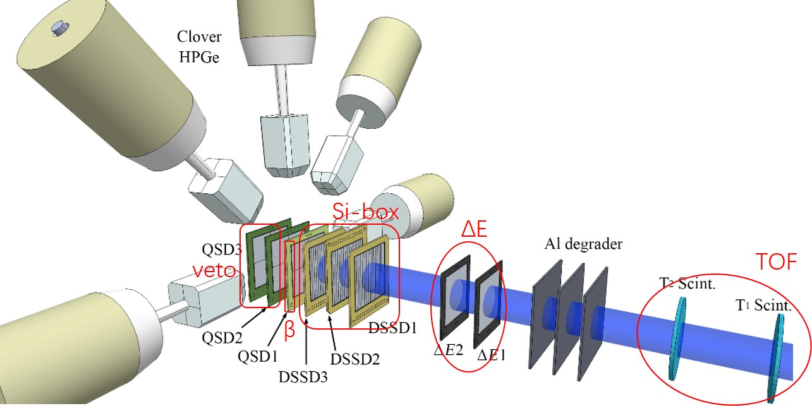

experiment¶
About multiplicity output in RJ45 in PKU firmware
when setting multiplicity==0, output high level
when setting multiplicity>=1, the default output is low level, and it is high when triggered.
When the MSRB bit 6 is 1
the synchronization indication signal can be obtained
have the DPMFULL output information
have back plane FT, VT information
online monitor¶
After modifying the parameter configuration file settings.ini, you need to run the following program to modify the register settings.
./progfippi
It should be noted that the program is not allowed to be executed when DAQ running
You can view the parameters settings in the web page, and the scaler counter and so on.
experiment mode¶
We will provide a common combination of firmware and software for the following four types of experiments.
in beam gamma¶
designing…
beta decay¶
Listed below is the silicon detector information in the detection array:
- QSDΔE1
MICRON MSQ25, Junction 4, 50.0mm x 50.0mm, 309um
- QSDΔE2
CIAE Q300, Junction 4, 50.0mm x 50.0mm, 300um
- DSSD1
MICRON W1, Junction 16, Ohmic 16, 49.5mm x 49.5mm, 142um
- DSSD2
MICRON W1, Junction 16, Ohmic 16, 49.5mm x 49.5mm, 142um
- DSSD3
MICRON W1, Junction 16, Ohmic 16, 49.5mm x 49.5mm, 142um
- QSD1
MICRON MSQ25, Junction 4, 50.0mm x 50.0mm, 1546um
- QSD2
CIAE Q300, Junction 4, 50.0mm x 50.0mm, 300um
- QSD3
CIAE Q300, Junction 4, 50.0mm x 50.0mm, 300um
The signals of the plastic scintillator T1 and T2 are converted into pulse amplitude information by TAC, which can be collected using 100MSPS module.
designing…
nuclear reaction¶
designing…
Super heavy nucleus¶
designing…